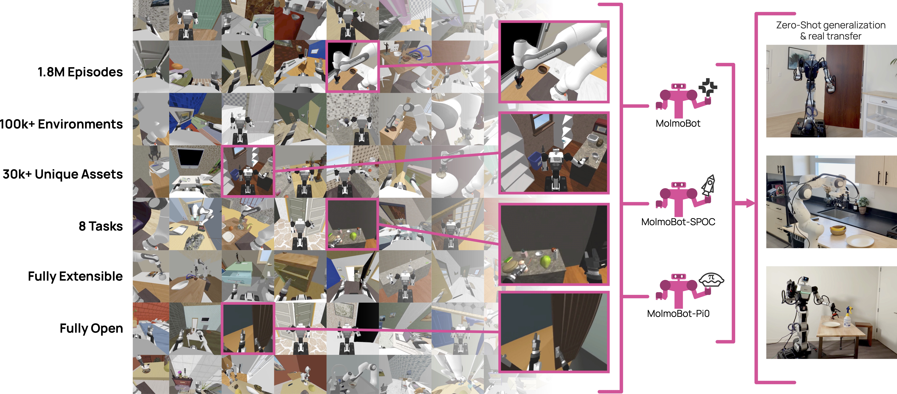
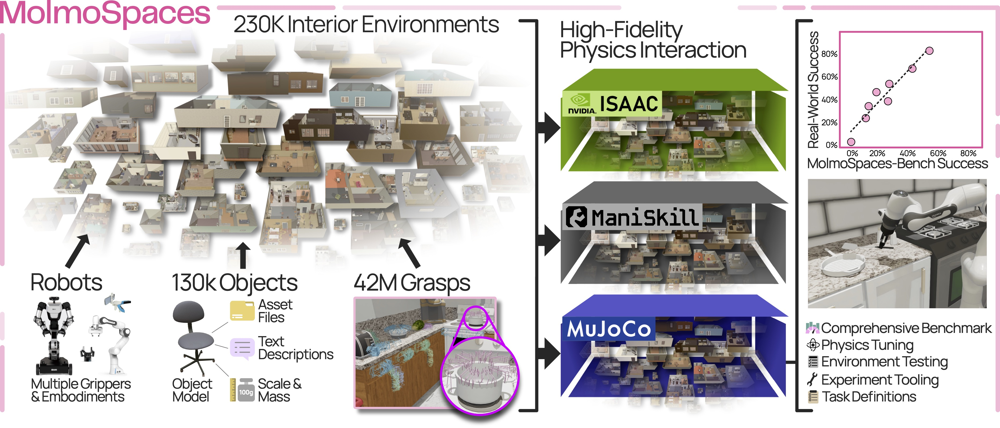
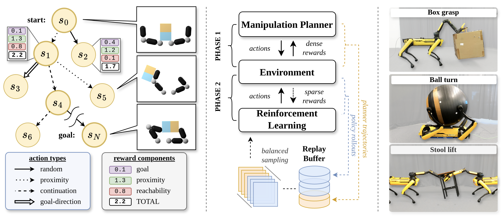

|
I'm a predoctoral researcher with the PRIOR team at the Allen institute for AI (AI2) in Seattle, WA. Previously, I was receiving my BSE in computer science at the University of Pennsylvania along with my MS in robotics at the GRASP Lab. After graduating, I joined the RAI Institute as a software engineer, working in various areas spanning embedded software, manipulation, and perception. My research interests include scaling up robotic manipulation capabilities, with particular emphasis on whole-body manipulation and contact-rich tasks. My research aims to improve robot generalization, robustness, and adaptability by leveraging data-driven approaches that enable robots to perform effectively in new and unseen environments. |

|
News |
| April 2026 | Our paper, Molmospaces, was accepted to RSS 2026. |
| December 2025 | Our workshop, Embodied Reasoning in Action (ERA), was accepted into CVPR 2026. |
| July 2025 | I joined AI2's PRIOR team as a predoctoral researcher. |
| September 2024 | Our paper Jacta: A Versatile Planner for Learning Dexterous and Whole-body Manipulation was accepted to CoRL 2024. |
| July 2023 | I started a full time position at the Robotics and AI Institute. |
| May 2023 | I completed my Bachelor's of Science in Engineering (BSE) in Computer Science and Master's of Science (MS) in Robotics from the University of Pennsylvania. |
Publications |
|
 |
Abhay Deshpande*, Maya Guru*, Rose Hendrix*, Snehal Jauhri*, ..., Dieter Fox, Ali Farhadi, Georgia Chalvatzaki, Dhruv Shah, Ranjay Krishna ArXiv, 2026 project page / report *co-first authors listed alphabetically MolmoBot is a robotics data-generation engine and policy suite that is trained exclusively on simulated expert trajectories generated in MolmoSpaces, outperforming state-of-the-art policies on tabletop pick-and-place and demonstrating sim2real transferability of mobile manipulation tasks. |
|
 |
Yejin Kim, Wilbert Pumacay, Omar Rayyan, Max Argus, ... Maya Guru, ... Ali Farhadi, Dieter Fox, Ranjay Krishna RSS, 2026 project page / code / data / report MolmoSpaces is a fully open embodied AI platform featuring diverse indoor scenes, object models, and grasp annotations compatible with MuJoCo, Isaac Lab, and ManiSkill, along with benchmarks designed to enable distributional analysis of robot policies across systematic variations in environment and task conditions. |
|
 |
Jan Brüdigam, Ali-Adeeb Abbas, Maks Sorokin, Kuan Fang, Brandon Hung, Maya Guru, Stefan Sosnowski, Jiuguang Wang, Sandra Hirche, Simon Le Cleac'h CoRL, 2024 project page / arXiv A motion planner for dexterous and whole-body manipulation that can be used to generate data across multiple embodiments, enabling efficient Sim2Real RL for complex manipulation tasks. |
|
Website adapted from here. |